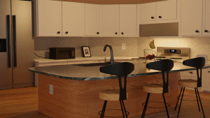
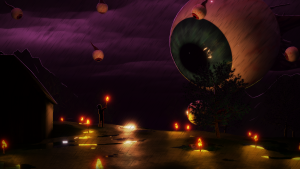
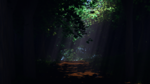
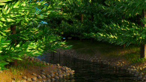
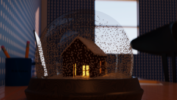
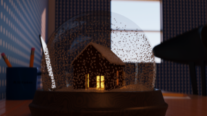

My teacher taught the basics and told me to play a lot of classical songs.
I burned myself out after a couple years and stopped completely
I didn't touch my guitar for 4 years

4 years later, I went to community college through running start.
I enrolled into an audio engineering course and learned a lot about digital music.
I enjoyed it so much, that I started learning about DAWs in my own time.
I even played my guitar again.
but it still didn't go anywhere.
One quarter later, I enrolled in my very first computer science class.
After learning the fundamentals, I wrote my first program and I loved the process.
I stuck with it and continued taking CS classes each quarter.
I finally knew what I wanted to do.

Then, the pandemic hit.
Everything was suddenly moved online, and there wasn't much to do outside of classes.
So, I tried something new: 3D-Modelling.
I started with a low-poly island

And went from there
   
 

Then, I was introduced to game development
I downloaded a game engine called unity, and started messing around. I made a simple demo to understand how it works
Then, I realized I can combine all of my hobbies.
I could combine 3D-Modelling, music, and programming all into one project!
I participated in game jams on itch.io
The games weren't great, but I liked making them
I don't plan on releasing a full game, or pursuing game-dev as a career.
But I have a good reason to do each of my hobbies to achieve a single goal.
And I get to see all of these elements complement each other.